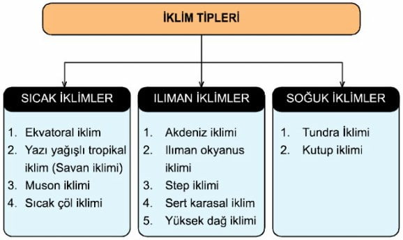

-İKLİM VE BİTKİ ÖRTÜSÜ-
İklim ve Bitki Örtüsü
İklimi:İçel ilinde,Akdeniz iklimi hüküm sürer.Kıyıdan içeri doğru gidildikçe kara iklimi husûsiyeti görülür. Kıyılarda yazlar sıcak ve kurak, kışlar ılık ve yağışlı geçer. Yüksek yerlerde yazlar serin ve kurak, kışlar soğuk ve kar yağışlı geçer. Senelik yağış miktarı 419-1032 mm arasında her ilçede değişiktir.Senenin akseriya 6 günü sıfır derecenin altında ve 6°C ile + 43°C arasında seyreder.
Bitki Örtüsü: İçel bitki örtüsü bakımından çok zengindir. Arâzinin sâdece yüzde 5’i tarıma elverişli değildir.Geri kalan toprağın yüzde 55’i ormanlık ve fundalıkla kaplıdır.Yüzde 25’i ekili ve dikili alanlardır. Yüzde 15’i çayır ve mer’alarla kaplıdır.Ovalar tahıl ve diğer ürünleri yetiştiren tarlalarla, kıyı şeridi muz ve turunçgil bahçeleri ve vâdiler meyve ağaçları ile kaplıdır.
